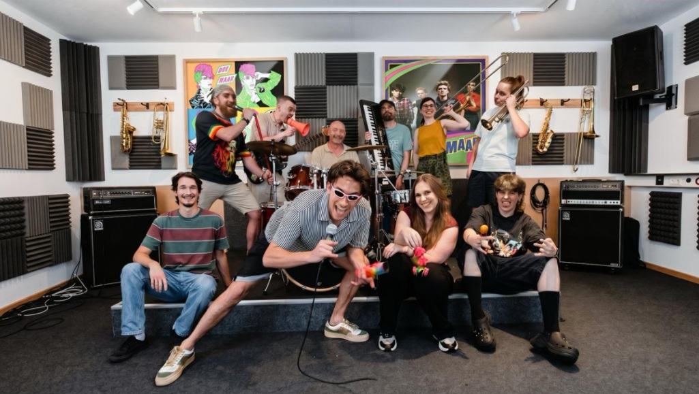

Foto
CH 03 • VHS HI-FI
Live Agenda
TOUR DATESNieuws & Updates
TELETEKST P.101Naamsverandering naar RATTATA!
Met trots maken we bekend dat de bandnaam is veranderd van Toe Maar Experience naar RATTATA!. Dit werd feestelijk onthuld op 7 november tijdens onze show in Café Taverne in Tilburg.
Over de Band
NEDERPOP '83RATTATA! (voorheen Toe Maar Experience) is een tienkoppige Doe Maar-tribute band uit Noord-Brabant en omstreken, opgericht in september 2025 door Enzo Smit, die samen één missie delen: de energie, het gevoel en de unieke sound van Doe Maar opnieuw tot leven brengen — groter, voller en dynamischer dan ooit.
Met een repertoire aan hits brengt RATTATA! zowel de iconische klassiekers als de minder bekende parels. De band speelt single-versies, live-versies en zorgvuldig uitgewerkte arrangementen die het origineel respecteren maar live nóg beter werken.
De blazerssectie vormt het herkenbare hart van de Nederpop-sound, ondersteund door een uitgebreide ritmesectie, keys, gitaar. RATTATA! rijk, energiek en authentiek — een live-ervaring die het publiek moeiteloos terugvoert naar de hoogtijdagen van RATTATA! staat garant voor een avond vol nostalgie, dansbaarheid en pure liefde voor Nederpop. Even terug naar ‘83!
Boekingen & Contact
Wil je RATTATA! op jouw podium, festival of feest?